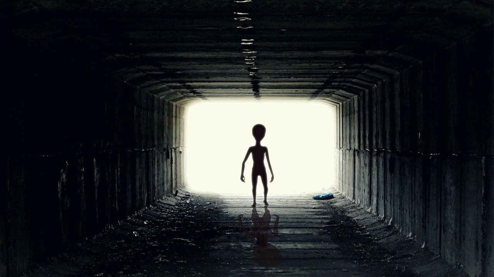

SpaceX e l'Agenzia russa Roscosmos
Dopo il successo di SpaceX, che il 31 maggio ha fatto arrivare con la sua Dragon due astronauti sulla Stazione spaziale internazionale, i commenti dalla Russia non si sono fatti attendere.
Dopo il successo di SpaceX, che il 31 maggio ha fatto arrivare con la sua Dragon due astronauti sulla Stazione spaziale internazionale, i commenti dalla Russia non si sono fatti attendere.
È ancora Cassini, la missione congiunta dell'Agenzia spaziale europea e della NASA, a far parlare di sé, nonostante sia terminata nel 2017: ma ha studiato Saturno, i suoi anelli e alcuni dei suoi satelliti per ben 13 anni, prima che si decidesse di porre fine all'esplorazione con uno storico Gran Finale, giù, attraverso l'atmosfera del Pianeta con gli Anelli. la vita così come la conosciamo.
Il Sole giocherà un ruolo fondamentale nel futuro dell'esplorazione spaziale. I rover che le agenzie spaziali si preparano a far sbarcare su Marte e sulla Luna saranno infatti alimentati tramite pannelli fotovoltaici dall'energia della nostra stella.
Explore è l'agenzia
governativa civile italiana responsabile delle missioni spaziali
e della ricerca aerospaziale.
E' stata stata istituita a
Torino nel 1993 dal presidente della Repubblica italiana Luigi
Scalfaro
Ha scoperto l'esistenza di vita aliena nello spazio durante la missione Ulisse
E'collocata sotto la Mole Antonelliana a 2km di profondità
Non lasciare spazio all'immaginazione
Vieni a conoscere i nostri eroi
Il destino del mondo è nelle tue mani